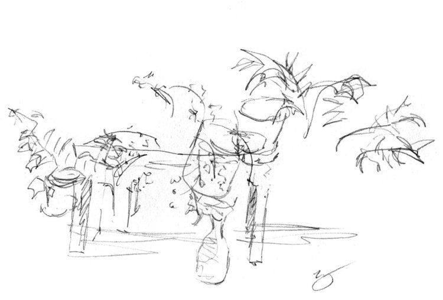

Don't Look Now!
This exercise is good for improving your observational skills and also for taking your mind off the details. As you draw dont look at your page, only look at the subject you are drawing. This is best done from life, get a real object in front of you and starting from the center of the page, pick a spot on your subject and begin. It helps with concentration as you are only thinking about the subject and not how your drawing is looking. Read more here.
